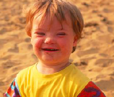
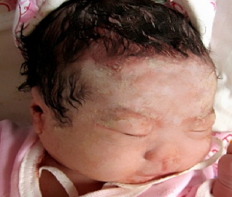
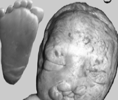

我国是人口出生缺陷高发国家，出生缺陷总发生率为5.6%，其中染色体疾病是导致新生儿出生缺陷最常见的原因，包括染色体非整倍体疾病和染色体结构异常疾病。
染色体非整倍体疾病是指整倍体染色体中缺少或额外增加一条或若干条染色体，包括21-三体综合征、18-三体综合征、13-三体综合征以及一些性染色体异常，如XYY综合征，又名超雄 综合征等。
这类病的发生具有偶然性和随机性，发病原因尚不明确，任何一对健康的夫妇都不能排除这种潜在危险，发病率通常随着母亲年龄的增加而增高。据称中国每20分钟就出生一位21-三体综合征（唐氏综合症）婴儿。
| 疾病类型 | 发病率 | 临床表现 | |
| 唐氏综合征 （21-三体综合征） |
 | 1/600-800 | 先天性智力低下、五官异常、生长发育迟缓、伴有多系统畸形。 |
| 爱德华氏综合征 （18-三体综合征） |
 | 1/3500~8000 | 先天性智力障碍、头小畸形、生长发育障碍、产后呼吸摄食困难。 |
| 帕陶氏综合征 （13-三体综合征） |
 | 1/3500~8000 | 先天性智力障碍、头小畸形、生长发育障碍、产后呼吸摄食困难。 |
| 方法 | 关键数据描述 | 孕周 | 检测周期 |
| 血清学筛查 | 5%假阳性率；60%~80%检出率 | 11~13+6 14~20+6 |
1周内 |
| 胎儿颈部透明带超声（NT） | 5%假阳性率；60%~80%检出率 | 11~13+6 | 即日 |
| 即日 | 1%~3%流产率；检出率>99% | 10~13 | 4~5周 |
| 羊水穿刺 | 0.5%~1%流产率；检出率>99% | 16~21 | 4~5周 |
| 脐静脉穿刺 | 0.5%~1%流产率；检出率>99% | 20~28 | 4~5周s |
| 无创产前基因检测 | 无流产风险；检出率>99.9% | 12~28 | 10天 |
2013年9月，北京博奥医学检验所获批为首批个体化医学检验试点单位与国家个体化医学检验培训基地。北京博奥医学检验所是秉承博奥生物集团优秀的“政产学研用”理念，以芯片和测序技术为基础的高端化、特色化、个体化的分子诊断中心。北京博奥医学检验所重点围绕遗传性疾病预警和诊断、肿瘤个体化诊断和用药指导、心血管疾病个体化诊断和用药指导、代谢性疾病个体化诊断和用药指导、感染性疾病个体化诊断和用药指导、高端健康管理六个领域开展临床检测服务，将建立一个以高新技术研发为源动力，具有现代化管理体系、国际化实验室标准、前沿科研成果转化应用的高质量检验医学服务机构，研究、发展和推动LDTs ( Laboratory Developed Tests）服务医疗机构，打造一个“以诊明疗”和“以诊促疗”的示范全国的转化医学服务基地。为保障人民健康，开展疾病预警、预防、个体化诊疗护航。